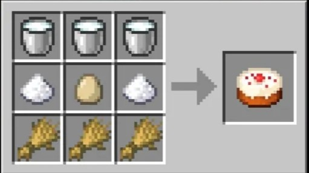

Bolo
INGREDIENTES
- Farinha – 3 xícaras
- Açúcar – 2 xícaras
- Leite – 1 xícara
- Ovos – 3 unidades
- Manteiga – 2 colheres (sopa)
- Fermento – 1 colher (sopa)
- Baunilha – 1 colher (chá)
INGREDIENTES

Obtido ao colher plantações cultivadas a partir de sementes.
Coletado utilizando um balde em vacas.
Produzido a partir da cana-de-açúcar.
Obtido de galinhas.